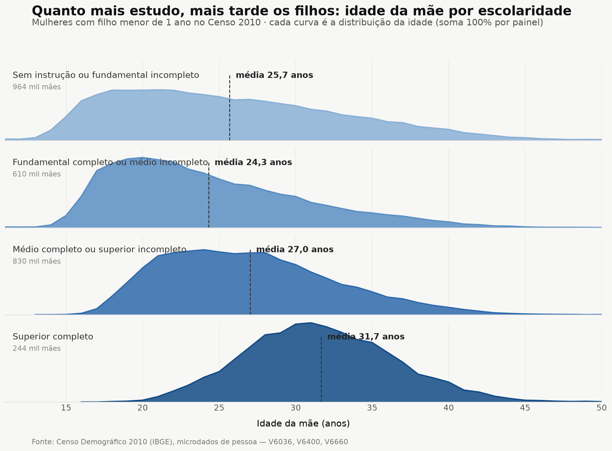
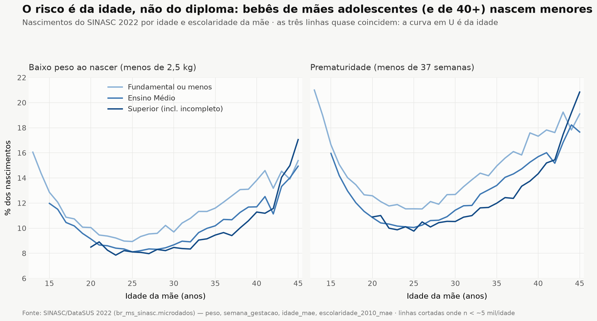

English summary
Brazil in numbers, portraits from official data
This project brings together 533 public datasets from Brazilian government institutions and reads them through an investigative lens rather than a technical one.
The site was written in Portuguese first: it's a project about Brazil, sourced from Brazilian public institutions (RAIS, SIM, TSE, CGU, IBGE, INEP, CNES, and others), aimed first at Brazilian readers, researchers, and journalists. This page is a short English summary with direct links into full English translations of all 34 thematic essays — each one pairs a data-driven narrative with the tables behind it; the original pt-br essays remain available from each page's language switcher. Data coverage, institutional provenance, and the technical architecture behind the site (DuckDB, Parquet on object storage, an LLM natural-language-to-SQL layer) are documented in more depth in the repository README and the technical appendix.
Each essay covers one domain — racial inequality, education, health, labor, politics, crime, the economy, the environment, public budgets, and more — built from linked microdata across ministries and public agencies. Findings are stated directly, with the supporting numbers shown alongside, in the tradition of data journalism rather than hedged academic writing.
The 34 themes
Five data views: motherhood, race, education and faith
Built from the 2010 Demographic Census (IBGE) and 2022 SINASC (national live-birth registry), these five charts back up theme 09 — Gender, Family & Demographic Dynamics: how age, race, religion and education shape when and how Brazilian women have children — and how that shows up in birth outcomes. Axis labels and titles are in Portuguese, matching the rest of the underlying dataset.

Average mother's age rises from 25.7 (no schooling) to 31.7 (completed college) — 2010 Census.

Members of Deus é Amor and Assembleia de Deus have more children and less schooling than Presbyterians and Methodists — 2010 Census.

Indigenous women average 4 children and the lowest college share; white women show the opposite pattern — 2010 Census.

Babies born to teen mothers and mothers 40+ are smaller, even among more educated mothers — SINASC 2022.

At every age, Black and mixed-race mothers have higher rates of premature and low-weight births than white mothers — SINASC 2022.